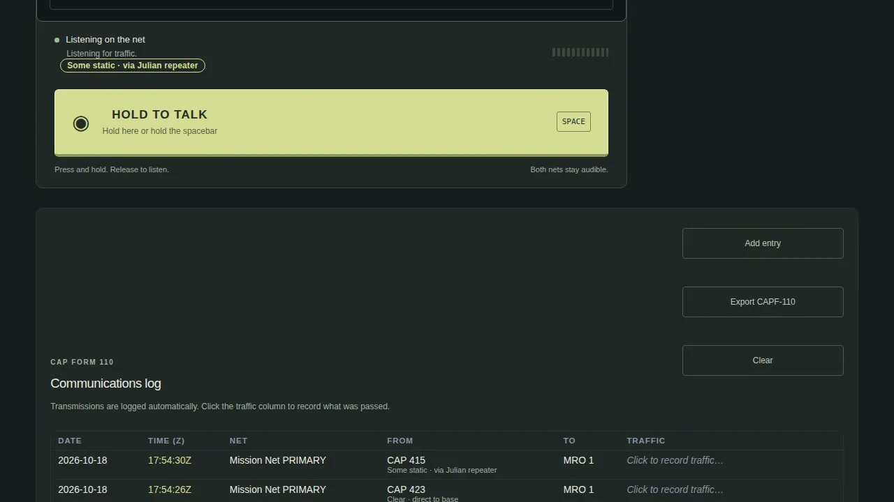

COMMUNICATIONS
Radios that behave like radios.
Exercises fall apart on the radio: the wrong mic selected, a repeater nobody can hit, a report in the wrong words. The simulator gives every seat a radio in front of them and a net that behaves like a net.
The base station
IN THE AIRCRAFT
The right seat's radios.
On the Mission Observer station sit a Technisonic TDFM-136B tactical radio and a Garmin GMA 1347 audio panel, drawn from the manufacturers' manuals and wired to the simulator.
The audio panel carries the trap every new observer falls into: pressing the top COM3 button lets you hear Mission Base; to talk you must press COM3 MIC. Most "the FM radio isn't transmitting" calls we have heard in training come down to this. The panel also has the intercom isolation the pilot uses while working SoCal Approach on COM1, and the clearance recorder that replays the last call you missed.
The TDFM-136B covers 136–174 MHz in analog FM and P25, with CAP channels programmed and a guard receiver that keeps listening to AIRGUARD in the background while you work the main channel.
AT MISSION BASE
The MRO's station.
The Base Radio page is the MRO's station: a Motorola APX-style VHF-FM control head on the tactical net, an Icom-style airband face beside it, push-to-talk on the touchscreen or the spacebar, a monitor button for weak signals, and a 60-second time-out that unkeys a stuck mic to protect the net.
Below it the CAP Form 110 fills itself in: Zulu time, station, channel, message. Quick reports for radio checks and ops-normal, and an export for the Incident Commander.

Heard through the repeater. The Base Radio tells the Mission Radio Operator how the call is coming in, and logs it.
GROUND TEAMS
The same net from the truck.
An Urban Direction Finding (UDF) team joins the same net from a phone in the truck. Air-to-ground is direct, line of sight. On the model the team reaches base direct to the Gillespie Field antenna or through the repeater, like the aircraft; because the phone does not yet report its position, the console treats a ground team's link as good.
HOW REACH IS SIMULATED
Where the antennas stand decides who hears whom.
Where the fixed equipment stands decides who can hear whom. For the sample exercise the Mission Base antenna is placed at Gillespie Field, 30 feet up on the valley floor, and a repeater is placed on the Julian VORTAC site at 5,560 feet, on the wing's assigned repeater pair (the frequencies are not published here; the console carries them). Those are exercise choices, not a survey of real CAP sites; other exercises can put them elsewhere, Palomar for example.
A station reaches a site when it is inside the radio horizon for both antenna heights and the terrain between them does not block the path. The simulator does not cut you off when you drift out of range. It gets worse the way a real net does: the further you are from the base antenna, the lower you are, or the more terrain is in the way, the more static and dropouts you hear, until the net is unusable. An aircraft at 4,500 feet near Julian is heard clearly through the repeater; a low aircraft in the canyons east of Julian may reach neither.
The Exercise Director can switch the effect off, or dial in a worse day. On the console the two settings are called Radio reach and Radio conditions, from Normal to Very poor. The Base Radio page tells the operator what it is hearing next to the station's name: Clear, Some static, Weak and choppy or Barely readable, and whether the call came direct to base or through the Julian repeater.
The repeater plays no part in direction finding. The DF listens to the beacon, not to the net.
THE VOICE NET
One mission net, several channels.
One mission net, several channels: a briefing room, Mission Base, Mission Net PRIMARY and ALTERNATE, an intercom per aircraft, and an Instructor–SET channel (SET: Skills Evaluator Training, the evaluators' qualification) for the evaluators to talk without being heard.
| Channel | Who is on it |
|---|---|
| Briefing Room | Everyone, before launch and at debrief. |
| Mission Base | Base staff talking among themselves. |
| Mission Net PRIMARY | The tactical net: aircraft, ground teams and net control. |
| Mission Net ALTERNATE | The second tactical channel. |
| Aircraft intercoms | One per aircraft, for the crew in that cockpit. |
| Instructor – SET | Evaluators only. It is never offered on the base radio. |